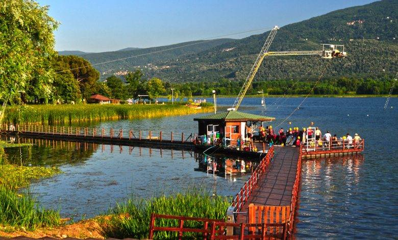
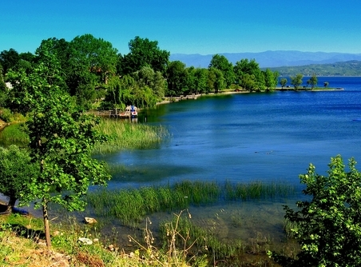
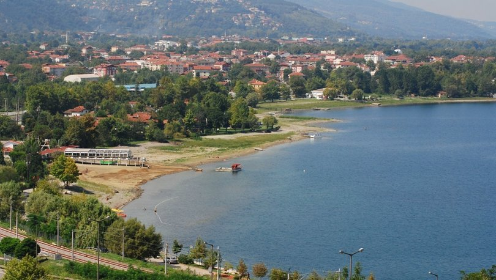

𝙎𝙖𝙠𝙖𝙧𝙮𝙖, 𝙏𝙪̈𝙧𝙠𝙞𝙮𝙚'𝙣𝙞𝙣 𝙚𝙣 𝙠𝙖𝙡𝙖𝙗𝙖𝙡ı𝙠 𝙮𝙞𝙧𝙢𝙞 𝙞𝙠𝙞𝙣𝙘𝙞 𝙞𝙡𝙞𝙙𝙞𝙧. 𝙄̇𝙡 𝙞𝙨𝙢𝙞𝙣𝙞 𝙩𝙤𝙥𝙧𝙖𝙠𝙡𝙖𝙧ı𝙣𝙙𝙖𝙣 𝙜𝙚𝙘̧𝙚𝙣 𝙎𝙖𝙠𝙖𝙧𝙮𝙖 𝙣𝙚𝙝𝙧𝙞'𝙣𝙙𝙚𝙣 𝙖𝙡𝙢ı𝙨̧𝙩ı𝙧. 𝙎𝙖𝙠𝙖𝙧𝙮𝙖 𝙄̇𝙡𝙞𝙣𝙞𝙣 𝙢𝙚𝙧𝙠𝙚𝙯𝙞 𝘼𝙙𝙖𝙥𝙖𝙯𝙖𝙧ı'𝙙ı𝙧. 𝘼𝙙𝙖𝙥𝙖𝙯𝙖𝙧ı 2021 𝙮ı𝙡ı𝙣𝙙𝙖 𝘿𝙖𝙣𝙞𝙢𝙖𝙧𝙠𝙖'𝙙𝙖 𝙖𝙡𝙙ı𝙜̆ı 𝙤̈𝙙𝙪̈𝙡 𝙞𝙡𝙚 𝙗𝙞𝙨𝙞𝙠𝙡𝙚𝙩 𝙨̧𝙚𝙝𝙧𝙞 𝙪𝙣𝙫𝙖𝙣ı𝙣ı 𝙠𝙖𝙯𝙖𝙣𝙢ı𝙨̧𝙩ı𝙧. .
𝓑𝓐𝓢̧𝓐 𝓓𝓞̈𝓝𝓜𝓔𝓚 𝓘̇𝓒̧𝓘̇𝓝 𝓑𝓤𝓣𝓞𝓝𝓐 𝓑𝓐𝓢𝓘𝓝𝐀𝐧𝐚𝐝𝐨𝐥𝐮 𝐛𝐢𝐫𝐥𝐢𝐠̆𝐢𝐧𝐢 𝐢𝐥𝐤 𝐤𝐮𝐫𝐚𝐧 𝐇𝐢𝐭𝐢𝐭𝐥𝐞𝐫𝐥𝐞 𝐒𝐚𝐤𝐚𝐫𝐲𝐚'𝐧ı𝐧 𝐝𝐚 𝐭𝐚𝐫𝐢𝐡𝐢 𝐛𝐚𝐬̧𝐥𝐚𝐫. 𝐈̇𝐜̧ 𝐤𝐚𝐫ı𝐬̧ı𝐤𝐥ı𝐤𝐥𝐚𝐫 𝐬𝐨𝐧𝐮𝐜𝐮𝐧𝐝𝐚 𝐛𝐨̈𝐥𝐮̈𝐧𝐞𝐧 𝐇𝐢𝐭𝐢𝐭𝐥𝐞𝐫𝐝𝐞𝐧 𝐬𝐨𝐧𝐫𝐚 𝐛𝐨̈𝐥𝐠𝐞𝐝𝐞 𝐅𝐫𝐢𝐠𝐥𝐞𝐫 𝐡𝐚𝐤𝐢𝐦 𝐨𝐥𝐦𝐮𝐬̧𝐭𝐮𝐫.
𝟏𝟑. 𝐲𝐮̈𝐳𝐲ı𝐥ı𝐧 𝐬𝐨𝐧𝐥𝐚𝐫ı𝐧𝐚 𝐝𝐨𝐠̆𝐫𝐮 𝐊𝐨𝐧𝐮𝐫 𝐀𝐥𝐩, 𝐛𝐮𝐠𝐮̈𝐧𝐤𝐮̈ 𝐀𝐝𝐚𝐩𝐚𝐳𝐚𝐫ı 𝐇𝐚𝐯𝐳𝐚𝐬ı'𝐧ı 𝐟𝐞𝐭𝐡𝐞𝐝𝐞𝐫𝐞𝐤 𝐓𝐮̈𝐫𝐤 𝐡𝐚𝐤𝐢𝐦𝐢𝐲𝐞𝐭𝐢𝐧𝐢 𝐲𝐞𝐧𝐢𝐝𝐞𝐧 𝐬𝐚𝐠̆𝐥𝐚𝐝ı.𝐎𝐫𝐡𝐚𝐧 𝐆𝐚𝐳𝐢 𝐳𝐚𝐦𝐚𝐧ı𝐧𝐝𝐚 𝐲𝐚𝐩ı𝐥𝐚𝐧 𝐛𝐮 𝐟𝐞𝐭𝐢𝐡𝐥𝐞𝐫𝐞 𝐢𝐭𝐡𝐚𝐟𝐞𝐧 𝐒𝐚𝐤𝐚𝐫𝐲𝐚 𝐯𝐞 𝐜̧𝐞𝐯𝐫𝐞𝐬𝐢𝐧𝐝𝐞 𝐩𝐚𝐝𝐢𝐬̧𝐚𝐡 𝐚𝐝ı𝐧𝐚 𝐎𝐫𝐡𝐚𝐧 𝐂𝐚𝐦𝐢𝐢'𝐥𝐞𝐫 𝐲𝐚𝐩ı𝐥𝐦ı𝐬̧𝐭ı𝐫..
𝐈̇𝐥𝐢𝐧 𝐭𝐨𝐩𝐨𝐠̆𝐫𝐚𝐟𝐲𝐚𝐬ı 𝐮̈𝐜̧ 𝐚𝐧𝐚 𝐤ı𝐬ı𝐦𝐝𝐚 𝐢𝐧𝐜𝐞𝐥𝐞𝐧𝐢𝐫: 𝟏. 𝐊𝐮𝐳𝐞𝐲𝐝𝐞𝐤𝐢 𝐚𝐥𝐜̧𝐚𝐤 𝐭𝐞𝐩𝐞𝐥𝐢𝐤 𝐚𝐥𝐚𝐧𝐥𝐚𝐫, 𝟐. 𝐎𝐫𝐭𝐚 𝐤ı𝐬ı𝐦𝐝𝐚 𝐀𝐝𝐚𝐩𝐚𝐳𝐚𝐫ı 𝐨𝐯𝐚𝐬ı 𝐝𝐮̈𝐳𝐥𝐮̈𝐠̆𝐮̈, 𝟑. 𝐆𝐮̈𝐧𝐞𝐲𝐝𝐞 𝐞𝐧𝐠𝐞𝐛𝐞𝐥𝐢 𝐝𝐚𝐠̆𝐥ı𝐤 𝐚𝐥𝐚𝐧𝐥𝐚𝐫. 𝐊𝐮𝐳𝐞𝐲 𝐀𝐧𝐚𝐝𝐨𝐥𝐮 𝐅𝐚𝐲 𝐡𝐚𝐭𝐭ı𝐧ı𝐧 𝐤𝐮𝐳𝐞𝐲𝐢𝐧𝐝𝐞 𝐨𝐥𝐦𝐚𝐤 𝐮̈𝐳𝐞𝐫𝐞, 𝐛𝐚𝐭ı𝐝𝐚𝐧 𝐊𝐨𝐜𝐚𝐞𝐥𝐢 𝐩𝐥𝐚𝐭𝐨𝐬𝐮 𝐒𝐚𝐤𝐚𝐫𝐲𝐚 𝐧𝐞𝐡𝐫𝐢𝐧𝐞 𝐤𝐚𝐝𝐚𝐫 𝐢𝐥𝐞𝐫𝐥𝐞𝐫. 𝐂̧𝐚𝐦 𝐃𝐚𝐠̆ı 𝐤𝐮̈𝐭𝐥𝐞𝐬𝐢 𝐡𝐚𝐫𝐢𝐜̧ 𝐤𝐮𝐳𝐞𝐲 𝐊ı𝐬ı𝐦𝐥𝐚𝐫 𝐊𝐨𝐜𝐚𝐞𝐥𝐢 𝐩𝐥𝐚𝐭𝐨𝐬𝐮𝐧𝐮𝐧 𝐝𝐞𝐯𝐚𝐦ı 𝐝𝐮𝐫𝐮𝐦𝐮𝐧𝐝𝐚𝐝ı𝐫..
